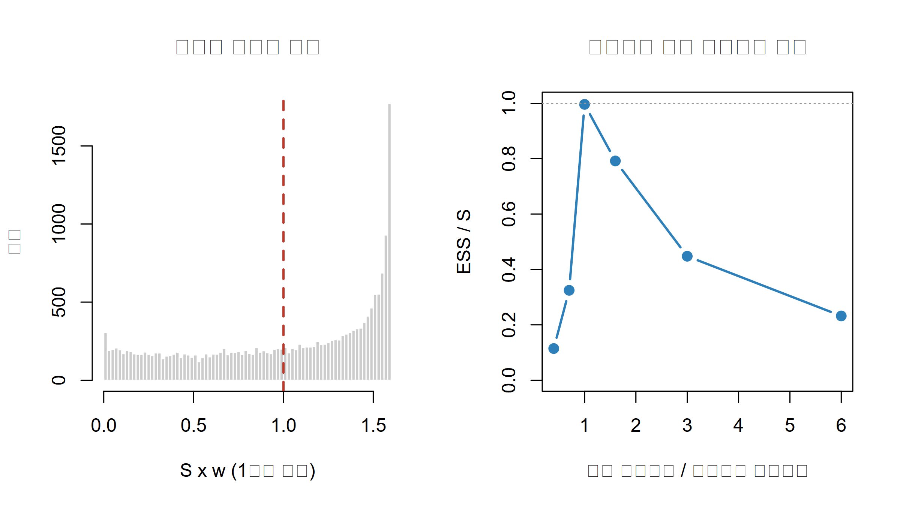

켤레가 아닌 사후분포를 격자·라플라스·기각표집·중요도표집으로 근사하고, 각 방법이 언제 무너지는지 확인합니다.
Author
Eunji Ha
Published
September 21, 2026
학습 목표
켤레가 아닌 모형에서 정규화상수를 왜 해석적으로 구할 수 없는지 설명할 수 있다.
격자 근사를 구현하고, 차원의 저주가 왜 치명적인지 구체적 수치로 설명할 수 있다.
optim(..., hessian = TRUE)으로 라플라스 근사를 구현하고 그 가정이 깨지는 상황을 진단할 수 있다.
기각표집과 중요도표집을 구현하고 수용률·유효표본수(ESS)로 품질을 평가할 수 있다.
네 방법의 한계를 비교해 MCMC가 필요한 이유를 설명할 수 있다.
RNA-seq 정렬 결과에서 어떤 이형접합 부위의 read를 세어 보니 40개 중 일부가 대립유전자(alternative allele)를 담고 있었습니다. 대립유전자 특이적 발현(allele-specific expression)이 있는지 보려면 대립유전자 비율 \(\theta\)의 사후분포가 필요합니다. W2처럼 베타 사전을 쓰면 답이 닫힌 형태로 나옵니다. 그런데 이 랩에서는 여러 부위를 하나의 회귀로 묶을 계획이라, 처음부터 로짓(logit) 스케일 모수 \(\beta = \log\{\theta/(1-\theta)\}\)에 정규 사전을 주기로 했습니다. 로지스틱 회귀 계수와 같은 스케일이라 나중에 공변량을 붙이기 쉽기 때문입니다. 이 순간 켤레성이 사라집니다. 이항 가능도와 로짓 스케일 정규 사전의 곱은 우리가 이름을 아는 어떤 분포도 아닙니다. 사후분포의 모양은 계산할 수 있지만, 그것을 확률분포로 만들어 주는 상수를 손으로 구할 수 없습니다. 이번 주는 그 상수를 우회하는 네 가지 방법을 배웁니다.
문제: 정규화상수를 못 푼다
베이즈 정리는 사후가 가능도와 사전의 곱에 비례한다고 말합니다. 비례상수는 그 곱을 모수 공간 전체에서 적분한 값입니다. 켤레 모형에서는 이 적분이 이미 알려진 분포의 정규화상수와 같아 공짜로 얻어지지만, 켤레가 아니면 그렇지 않습니다. 다만 비정규화 사후(unnormalized posterior)는 언제나 계산할 수 있습니다. 가능도와 사전을 곱하면 되니까요. 못 하는 것은 그 값을 전체 적분값으로 나누는 일뿐이고, 이번 주의 네 방법은 모두 “비정규화 값만 쓰고 적분은 피한다”는 같은 전략에서 출발합니다.
다섯 점만으로도 \(\beta\)가 \(-1\)과 \(0\) 사이, 대략 \(-0.6\) 근처에 몰려 있다는 것이 보입니다. 질량의 거의 전부가 \(\beta=-1\)(0.585)과 \(\beta=0\)(0.402) 두 점에 실려 있고, 이 다섯 점으로 계산한 사후평균은 \(-0.61\)입니다. 점을 수백 개로 늘리면 사실상 정확한 답이 됩니다.
격자 \(\theta_1,\dots,\theta_G\)와 간격 \(\Delta\)에 대한 식입니다. \(\Delta\)는 분자와 분모에서 상쇄되므로 기댓값에는 나타나지 않습니다. 이 챕터에서 \(\hat{p}(\theta_g\mid y)\)는 격자점의 확률질량이고(합이 1), 밀도 곡선을 그릴 때만 \(\hat{p}/\Delta\)로 나눕니다. W1에서는 같은 자리를 처음부터 \(\Delta\)로 나눈 밀도로 정의했으니 두 주차의 식을 비교할 때 주의하십시오. 오차는 격자 간격에 대해 \(O(\Delta^2)\) 수준입니다.
모수 3개면 백만 점, 1초입니다. 5개면 100억 점, 약 3시간입니다. 10개면 300만 년이 걸립니다. 계층모형이나 로지스틱 회귀에서 모수 10개는 전혀 큰 모형이 아닙니다.
Warning
격자 근사는 “격자 범위 밖의 확률은 0”이라고 가정합니다. 범위를 좁게 잡으면 꼬리가 잘려 사후 표준편차가 과소추정되므로, 항상 격자 양 끝의 비정규화 사후값이 최댓값 대비 충분히 작은지 확인해야 합니다.
라플라스 근사
표본이 많아지면 사후는 종 모양에 가까워집니다. 그렇다면 전체를 다 계산할 것 없이 봉우리의 위치와 그 주변이 휘어진 정도만 알면 됩니다. 로그사후는 봉우리 근처에서 아래로 볼록한 포물선처럼 보이는데, 로그가 정확히 포물선이면 원래 함수는 정확히 정규분포입니다. 그래서 두 가지만 구하면 됩니다. 로그사후를 최대로 만드는 점(최빈값, MAP)과 그 점에서의 2계 도함수입니다. 2계 도함수의 절댓값이 크면 봉우리가 뾰족하다는 뜻이고 그만큼 분산이 작습니다. 다차원이면 헤시안(Hessian) 행렬의 역행렬이 곧 공분산행렬입니다.
수식으로 보기
\[\log q(\theta) \approx \log q(\hat\theta) - \tfrac{1}{2}(\theta-\hat\theta)^\top H (\theta-\hat\theta), \qquad H = -\left.\frac{\partial^2 \log q}{\partial\theta\,\partial\theta^\top}\right|_{\hat\theta}\]
\(\hat\theta = \arg\max_\theta \log q(\theta)\)에서 2차까지 전개하면 1차항이 0이라 위 식이 되고, 지수를 취하면 정규분포의 커널이므로 \(p(\theta\mid y) \approx N(\hat\theta,\,H^{-1})\)입니다. \(H\)는 음의 로그사후의 헤시안이므로, 목적함수를 음의 로그사후로 두면 optim(..., hessian = TRUE)이 바로 \(H\)를 돌려줍니다. 덤으로 \(m(y) \approx q(\hat\theta)(2\pi)^{d/2}|H|^{-1/2}\)라는 정규화상수 근사도 얻는데, 이 식이 BIC의 출발점입니다.
Tip
라플라스 근사의 비용은 최적화 한 번입니다. 격자처럼 \(G^d\)로 늘어나지 않고 모수 개수에 대해 다항식 수준으로만 늘어나므로 수십 차원에서도 즉시 계산됩니다.
Warning
라플라스 근사는 사후가 하나의 봉우리를 갖고 대략 대칭일 때만 믿을 수 있습니다. 표본이 작거나, 모수가 경계 근처(\(\theta\)가 0이나 1에 붙은 경우)이거나, 사후가 다봉(multimodal)이면 크게 빗나갑니다. 다봉일 때는 봉우리 하나만 잡고 나머지를 완전히 무시합니다.
기각표집
앞의 두 방법은 밀도를 근사했습니다. 이제부터는 사후에서 표본을 뽑는 방법입니다. 표본만 있으면 평균이든 구간이든 전부 표본통계량으로 계산할 수 있습니다. 직관은 다트 던지기입니다. 비정규화 사후 \(q\)를 완전히 덮는 지붕 \(Mg\)를 씌웁니다. \(g\)는 쉽게 뽑을 수 있는 제안분포(proposal distribution), \(M\)은 덮개를 만드는 상수입니다. \(g\)에서 후보를 뽑고 0과 \(Mg\) 사이에서 높이를 균등하게 뽑아, 그 높이가 \(q\) 아래면 채택합니다. 채택된 점들은 근사가 아니라 정확히 사후분포를 따릅니다. 문제는 효율입니다. 지붕과 실제 함수 사이의 빈 공간이 넓을수록 버려지는 후보가 많아집니다.
모든 \(\theta\)에서 \(q(\theta)\le Mg(\theta)\)가 되도록 \(M \ge \sup_\theta q(\theta)/g(\theta)\)를 잡고, \(\theta^*\sim g\)와 \(u\sim\text{Uniform}(0,1)\)을 뽑아 \(u \le q(\theta^*)/\{Mg(\theta^*)\}\)이면 채택합니다. 채택된 표본의 분포는 정확히 \(p(\theta\mid y)\)이고 전체 수용률(acceptance rate)은 위와 같습니다. \(d\)차원에서 \(g\)가 축마다 조금씩 어긋나면 그 불일치가 곱으로 누적되어 \(M\)이 지수적으로 커집니다. 주어진 데이터에서 \(m(y)\)는 상수이므로 수용률 \(m(y)/M\)은 \(M\)에 반비례하고, 따라서 지수적으로 떨어집니다. 실무에서 기각표집은 대체로 1~3차원용입니다.
중요도표집
버리는 게 아까우니 전부 쓰되 가중치를 주자는 발상입니다. \(g\)에서 뽑은 점들은 어떤 영역은 과대표집, 어떤 영역은 과소표집되어 있으므로, 각 점에 \(w = q/g\)라는 보정 가중치를 붙이면 가중평균이 사후 기댓값의 일치추정량이 됩니다. \(q\)가 비정규화 상태여도 괜찮습니다. 가중치 합이 1이 되도록 나누면(자기정규화, self-normalized) 모르는 상수가 분자·분모에서 상쇄되기 때문입니다. 품질은 가중치가 얼마나 고르게 퍼져 있는지로 잽니다. 소수의 점이 가중치를 독식하면 표본 수는 많아도 실질적으로는 몇 개짜리 표본이고, 이를 수치화한 것이 유효표본수(effective sample size, ESS)입니다.
\(\theta_1,\dots,\theta_S \sim g\)에 대해 \(w_s = q(\theta_s)/g(\theta_s)\), \(\tilde w_s = w_s/\sum_j w_j\)라 두면 \(\mathbb{E}[h(\theta)\mid y] \approx \sum_s \tilde w_s h(\theta_s)\)이고 ESS는 위와 같이 정의됩니다. 가중치가 모두 같으면 \(\text{ESS}=S\), 한 점이 전부 차지하면 \(\text{ESS}=1\)입니다. 추정량의 분산은 \(\text{Var}[q(\theta)/g(\theta)] < \infty\)일 때만 유한한데, 이는 \(g\)의 꼬리가 \(q\)의 꼬리보다 두꺼울 것을 요구합니다.
Warning
제안분포의 꼬리가 사후보다 얇으면 \(w=q/g\)가 꼬리에서 발산합니다. 아주 드물게 뽑히는 한 점이 엄청난 가중치를 받아 추정값이 그 점 하나에 좌우되고, 표본 수를 늘려도 수렴하지 않습니다. 정규 제안분포 대신 자유도가 낮은 \(t\) 분포를 쓰는 이유가 이것입니다.
네 방법 비교, 그리고 왜 MCMC인가
방법
출력
정확도
차원 확장성
주요 실패 모드
격자 근사
격자 위 밀도
촘촘하면 사실상 정답
\(G^d\), 3차원 이상 불가
범위를 좁게 잡아 꼬리 절단
라플라스 근사
정규분포 모수
대표본에서만 양호
매우 좋음(최적화 1회)
비대칭·다봉·소표본
기각표집
정확한 독립표본
근사 오차 없음
나쁨(수용률 지수적 감소)
\(M\)을 못 찾음, 수용률 0에 근접
중요도표집
가중표본
가중치가 고르면 양호
보통(ESS 급락)
제안분포 꼬리가 얇을 때 발산
격자·기각·중요도는 모두 모수 공간 전체를 미리 덮으려 합니다. 차원이 오르면 사후가 실제로 차지하는 부피는 전체의 극히 일부가 되므로 이 전략은 반드시 무너집니다. 라플라스만 국소적이지만 대신 모양을 정규분포로 고정해 버립니다. MCMC는 공간을 덮는 대신 현재 위치에서 다음 위치로 걸어 다니면서 확률이 높은 곳에 오래 머무는 마르코프 연쇄를 만듭니다. 전역 제안분포가 필요 없고 비정규화 사후의 비(ratio)만 계산하면 되며, 대가는 표본이 서로 독립이 아니라는 점입니다.
실습: base R로 직접 구현
0단계. 공통 예제 만들기
가상의 데이터입니다. 이형접합 부위 하나에서 read 40개를 관측했고 참 대립유전자 비율은 0.25로 두었습니다. 표본 변동 때문에 관측 비율은 참값과 다소 다르게 나옵니다.
log1pexp <-function(x) ifelse(x >30, x, log1p(exp(x))) # 오버플로 방지 도우미# 로그 비정규화 사후: 로짓 스케일 모수 beta, 사전 N(0, 1.5^2)log_post <-function(beta, y = y_alt, n = n_reads, s =1.5) { y * beta - n *log1pexp(beta) +dnorm(beta, 0, s, log =TRUE)}
1단계. 격자 근사로 기준선 만들기
1차원이므로 촘촘한 격자는 사실상 정답입니다. 이후 세 방법을 이 기준선과 비교합니다.
beta_grid <-seq(-6, 2, length.out =2000) # 충분히 넓은 범위lp_grid <-log_post(beta_grid); w_grid <-exp(lp_grid -max(lp_grid))p_grid <- w_grid /sum(w_grid) # 격자 위 확률질량dens_grid <- p_grid / (beta_grid[2] - beta_grid[1]) # 밀도 곡선용# 범위 점검: 양 끝의 상대 밀도가 작아야 꼬리가 잘리지 않습니다cat("격자 양 끝의 상대 밀도:", signif(w_grid[c(1, 2000)], 3), "\n")
par(mfrow =c(1, 2))hist(w_norm * n_is, breaks =60, col ="grey80", border ="white",main ="정규화 가중치 분포", xlab ="S x w (1이면 균등)", ylab ="빈도")abline(v =1, col ="#c0392b", lwd =2, lty =2)plot(scales, ess_vec / n_scan, type ="b", pch =19, lwd =2, col ="#2c7fb8", ylim =c(0, 1),main ="제안분포 폭과 유효표본 비율",xlab ="제안 표준편차 / 라플라스 표준편차", ylab ="ESS / S")abline(h =1, col ="grey60", lty =3)

제안분포의 폭이 사후와 비슷할 때(1.0배) 효율이 0.996으로 최대이고, 양쪽 어느 방향으로 벗어나도 떨어집니다. 좁은 쪽은 0.7배에서 0.325, 0.4배에서 0.114로 급락하고, 넓은 쪽은 1.6배에서 0.792, 3.0배에서 0.448, 6.0배에서 0.232로 완만하게 내려갑니다. 좁으면 제안분포 꼬리가 사후보다 얇아 소수의 점이 가중치를 독식하고, 넓으면 대부분의 점이 사후가 거의 0인 곳에 떨어져 낭비됩니다. 다만 폭을 사후에 정확히 맞추는 것이 실무 지침은 아닙니다. 정규 제안분포는 좁은 쪽으로 어긋나는 순간 \(w=q/g\)의 분산이 발산하고 ESS는 그 위험을 늦게 알려 줍니다. 그래서 실무에서는 폭을 맞추려 애쓰기보다 꼬리가 두꺼운 \(t\) 제안분포를 써서 좁은 쪽 실패 자체를 막습니다(연습문제 3 참고).
d = 2 격자점: 40000 초: 0.8 년: 2.53e-08
d = 6 격자점: 6.4e+13 초: 1.28e+09 년: 40.6
cat("축당 50등분으로 낮추면 d = 6 일 때 일수:", signif(50^6* cost /86400, 3), "\n")
축당 50등분으로 낮추면 d = 6 일 때 일수: 3.62
2차원은 4만 점, 0.8초로 아무 문제가 없습니다. 6차원은 \(6.4\times10^{13}\) 점이 되어 약 41년이 걸립니다. 축당 등분 수를 50으로 줄여도 사흘 반이 걸리면서 정밀도만 잃습니다. 격자 근사는 차원을 늘리는 방향으로는 어떤 타협도 통하지 않습니다.
문제 2. 표본이 매우 작고 관측값이 경계에 붙은 경우(\(y=0\), \(n=4\))에 약한 사전 \(\beta\sim N(0,5^2)\)을 쓰면 라플라스 근사가 얼마나 빗나갑니까? 격자 기준선과 겹쳐 그리고 \(P(\theta<0.1\mid y)\)를 두 방법으로 비교하십시오.
\(y=0\)이면 가능도는 \(\beta\)가 작아질수록 커지기만 하고, 왼쪽을 막아 주는 것은 약한 사전뿐입니다. 그 결과 사후는 왼쪽으로 심하게 늘어진 비대칭 분포가 됩니다. 라플라스는 이를 대칭 정규분포로 바꾸면서 오른쪽 꼬리에 없는 확률을 만들고 왼쪽 꼬리는 잘라냅니다. 꼬리확률처럼 분포의 끝을 쓰는 요약통계일수록 오차가 커집니다.
문제 3. 4단계 스캔에서 효율이 가장 나빴던 쪽(0.4배)과 마찬가지로 좁은 0.5배 제안분포를 쓰되, 정규분포 대신 자유도 3인 \(t\) 분포로 바꾸면 ESS가 개선됩니까? 두 제안분포의 ESS와 최대 가중치 점유율을 비교하십시오.
척도가 같아도 \(t\) 분포는 꼬리가 두꺼워 사후의 꼬리 영역에도 제안점을 공급합니다. 그 결과 \(w=q/g\)가 꼬리에서 폭발하지 않아 최대 가중치 점유율이 내려가고 ESS가 크게 올라갑니다. 추정된 사후평균도 기준선에 더 가깝습니다. 제안분포를 고를 때 위치와 척도보다 꼬리의 두께가 먼저라는 것이 핵심입니다.
정리
켤레가 아니면 \(m(y)=\int p(y\mid\theta)p(\theta)d\theta\)를 풀 수 없지만 비정규화 사후 \(q(\theta)=p(y\mid\theta)p(\theta)\)는 언제나 계산할 수 있습니다. 이번 주의 모든 방법이 여기서 출발합니다.
격자 근사는 1~2차원에서 사실상 정답이고 기준선으로 쓰기 좋습니다. 격자점이 \(G^d\)로 늘어나 3차원을 넘기면 쓸 수 없습니다.
라플라스 근사는 optim(..., hessian = TRUE) 한 번으로 끝나고 고차원에서도 빠릅니다. 대신 사후가 비대칭·다봉이거나 표본이 작으면 꼬리확률부터 크게 틀립니다.
기각표집은 정확한 독립표본을 주지만 덮개 상수 \(M\)이 필요하고 차원이 오르면 수용률이 지수적으로 떨어집니다. 중요도표집은 모든 표본을 쓰지만 품질이 제안분포에 달려 있어 ESS \(=(\sum w)^2/\sum w^2\)를 반드시 확인해야 하고, 꼬리가 두꺼운 \(t\) 제안분포를 기본으로 삼습니다.
셋은 모수 공간 전체를 덮으려 하고 하나는 모양을 정규분포로 고정합니다. 고차원 사후를 다루려면 전혀 다른 전략이 필요합니다.
다음 시간
W5에서는 마르코프 연쇄 몬테카를로(MCMC)를 다룹니다. 전역 제안분포 없이 현재 위치에서 다음 위치로 이동하며 사후를 탐색하는 메트로폴리스-헤이스팅스(Metropolis-Hastings) 알고리즘을 base R로 직접 구현하고, 이번 주의 격자 기준선과 같은 결과가 나오는지 확인합니다. 표본이 독립이 아니라는 대가 때문에 새로 필요해지는 수렴 진단(trace plot, 자기상관, \(\hat{R}\))도 함께 봅니다.